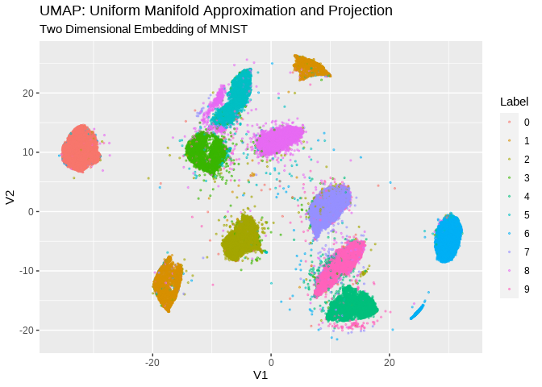

The goal of {cuda.ml} is to provide a simple and intuitive R interface for RAPIDS cuML. RAPIDS cuML is a suite of GPU-accelerated machine learning libraries powered by CUDA. {cuda.ml} is under active development, and currently implements R interfaces for the algorithms listed below (which is a subset of algorithms supported by RAPIDS cuML).
Supported Algorithms
| Category | Algorithm | Notes |
|---|---|---|
| Clustering | Density-Based Spatial Clustering of Applications with Noise (DBSCAN) | Only single-GPU implementation is supported at the moment |
| K-Means | Only single-GPU implementation is supported at the moment | |
| Single-Linkage Agglomerative Clustering | ||
| Dimensionality Reduction | Principal Components Analysis (PCA) | Only single-GPU implementation is supported at the moment |
| Truncated Singular Value Decomposition (tSVD) | Only single-GPU implementation is supported at the moment | |
| Uniform Manifold Approximation and Projection (UMAP) | Only single-GPU implementation is supported at the moment | |
| Random Projection | ||
| t-Distributed Stochastic Neighbor Embedding (TSNE) | ||
| Linear Models for Regression or Classification | Linear Regression (OLS) | |
| Linear Regression with Lasso or Ridge Regularization | ||
| Nonlinear Models for Regression or Classification | Random Forest (RF) Classification | Only single-GPU implementation is supported at the moment |
| Random Forest (RF) Regression | Only single-GPU implementation is supported at the moment | |
| Inference for decision tree-based models in XGBoost or LightGBM formats using the CuML Forest Inference Library (FIL) | Requires linkage to the Treelite C library when {cuml} is installed. Treelite is used for model loading. | |
| K-Nearest Neighbors (KNN) Classification | Uses Faiss for Nearest Neighbors Query. | |
| K-Nearest Neighbors (KNN) Regression | Uses Faiss for Nearest Neighbors Query. | |
| Support Vector Machine Classifier (SVC) | ||
| Epsilon-Support Vector Regression (SVR) |
Examples
Using {cuda.ml} for supervised ML tasks through {parsnip}
{cuda.ml} provides {parsnip} bindings for supervised ML algorithms such as rand_forest, nearest_neighbor, svm_rbf, svm_poly, and svm_linear.
The following example shows how {cuda.ml} can be used as a {parsnip} engine to build a SVM classifier.
library(dplyr, warn.conflicts = FALSE)
library(parsnip)
library(cuda.ml)
set.seed(11235)
train_inds <- iris %>%
mutate(ind = row_number()) %>%
group_by(Species) %>%
slice_sample(prop = 0.7)
train_data <- iris[train_inds$ind, ]
test_data <- iris[-train_inds$ind, ]
model <- svm_rbf(mode = "classification", rbf_sigma = 10, cost = 50) %>%
set_engine("cuda.ml") %>%
fit(Species ~ ., data = train_data)
preds <- predict(model, test_data)
cat("Confusion matrix:\n\n")
#> Confusion matrix:
preds %>%
bind_cols(test_data %>% select(Species)) %>%
yardstick::conf_mat(truth = Species, estimate = .pred_class)
#> Truth
#> Prediction setosa versicolor virginica
#> setosa 15 0 0
#> versicolor 0 12 1
#> virginica 0 3 14Using {cuda.ml} for unsupervised ML tasks
The following example shows how {cuda.ml} can be used for unsupervised ML tasks such as k-means clustering.
library(cuda.ml)
clustering <- cuda_ml_kmeans(
iris[, which(names(iris) != "Species")],
k = 3, max_iters = 100
)
# Expected outcome: there is strong correlation
# between cluster labels and `iris$Species`
print(clustering)
#> $labels
#> [1] 1 1 1 1 1 1 1 1 1 1 1 1 1 1 1 1 1 1 1 1 1 1 1 1 1 1 1 1 1 1 1 1 1 1 1 1 1
#> [38] 1 1 1 1 1 1 1 1 1 1 1 1 1 0 2 0 2 2 2 2 2 2 2 2 2 2 2 2 2 2 2 2 2 2 2 2 2
#> [75] 2 2 2 0 2 2 2 2 2 2 2 2 2 2 2 2 2 2 2 2 2 2 2 2 2 2 0 2 0 0 0 0 2 0 0 0 0
#> [112] 0 0 2 2 0 0 0 0 2 0 2 0 2 0 0 2 2 0 0 0 0 0 2 0 0 0 0 2 0 0 0 2 0 0 0 2 0
#> [149] 0 2
#>
#> $centroids
#> [,1] [,2] [,3] [,4]
#> [1,] 6.853846 3.076923 5.715385 2.053846
#> [2,] 5.006000 3.428000 1.462000 0.246000
#> [3,] 5.883607 2.740984 4.388525 1.434426
#>
#> $inertia
#> [1] 78.85567
#>
#> $n_iter
#> [1] 10
library(dplyr, warn.conflicts = FALSE)
tibble(cluster_id = clustering$labels, species = iris$Species) %>%
group_by(cluster_id) %>% count(species)
#> # A tibble: 5 × 3
#> # Groups: cluster_id [3]
#> cluster_id species n
#> <int> <fct> <int>
#> 1 0 versicolor 3
#> 2 0 virginica 36
#> 3 1 setosa 50
#> 4 2 versicolor 47
#> 5 2 virginica 14Using {cuda.ml} for visualizations
{cuda.ml} also features R interfaces for algorithms such as UMAP and t-SNE, which are useful when one needs to visualize clusters of high-dimensional data points by embedding them onto low-dimensional manifolds (i.e., 4 dimensions or fewer).
For example, the code snippet below shows how cuda_ml_umap() can be used to visualize the MNIST hand-written digits dataset, and also, the coloring based on the true label of each sample demonstrates how well the UMAP algorithm transforms different hand writings of the same digit into nearby points in a 2D embedding:
library(cuda.ml)
library(ggplot2)
library(magrittr)
# load mnist
source("data-raw/load-mnist.R")
str(mnist_images)
#> int [1:28, 1:28, 1:60000] 0 0 0 0 0 0 0 0 0 0 ...
str(mnist_labels)
#> int [1:60000(1d)] 5 0 4 1 9 2 1 3 1 4 ...
# flatten each image to a 1d array, combine into a matrix with 1 row per image
flatten <- function(img) {
dim(img) <- NULL
img
}
flattened_mnist_images <-
mnist_images %>% asplit(3) %>% lapply(flatten) %>% do.call(rbind, .)
# embed
embedding <- cuda_ml_umap(
flattened_mnist_images, n_components = 2, n_neighbors = 50,
local_connectivity = 15, repulsion_strength = 10
)
str(embedding$transformed_data)
#> num [1:60000, 1:2] -5.81 -31.26 11.1 7.35 11.87 ...
# visualize
embedding$transformed_data %>%
as.data.frame() %>%
dplyr::mutate(Label = factor(mnist_labels)) %>%
ggplot(aes(x = V1, y = V2, color = Label)) +
geom_point(alpha = .5, size = .5) +
labs(title = "UMAP: Uniform Manifold Approximation and Projection",
subtitle = "Two Dimensional Embedding of MNIST")
From this type of visualization, we can qualitatively understand the following about the MNIST dataset:
- The dataset can be reasonably classified into some number of categories.
- The right number of categories may be any where between 9 and 11.
- While there are some categories that are clearly distinguishable from others, there are others that have less clear boundaries with their neighbors.
- A small fraction of data points did not fit particularly well into any of the categories.
- Most data points belonging to the same digit category are clustered together in the UMAP output
Installation
In order for {cuda.ml} to work as expected, the C++/CUDA source code of {cuda.ml} must be linked with CUDA runtime and a valid copy of the RAPIDS cuML library.
Before installing {cuda.ml} itself, it may be worthwhile to take a quick look through the sub-sections below on how to properly setup all of {cuda.ml}’s required runtime dependencies.
Quick note on installing the RAPIDS cuML library:
Although Conda is the only officially supported distribution channel at the moment for RAPIDS cuML (i.e., see https://rapids.ai/start.html#get-rapids), you can still build and install this library from source without relying on Conda. See https://github.com/yitao-li/cuml-installation-notes for build-from-source instructions.
Install CUDA
(consult https://developer.nvidia.com/cuda-downloads for other platforms)
wget https://developer.download.nvidia.com/compute/cuda/repos/ubuntu2004/x86_64/cuda-ubuntu2004.pin
sudo mv cuda-ubuntu2004.pin /etc/apt/preferences.d/cuda-repository-pin-600
wget https://developer.download.nvidia.com/compute/cuda/11.4.2/local_installers/cuda-repo-ubuntu2004-11-4-local_11.4.2-470.57.02-1_amd64.deb
sudo dpkg -i cuda-repo-ubuntu2004-11-4-local_11.4.2-470.57.02-1_amd64.deb
sudo apt-key add /var/cuda-repo-ubuntu2004-11-4-local/7fa2af80.pub
sudo apt-get update
sudo apt-get -y install cudaAdd CUDA executables to path
(nvcc is needed for building the C++/CUDA source code of {cuda.ml})
echo "export PATH=$PATH:/usr/local/cuda/bin" >> ~/.bashrc
source ~/.bashrcInstall Miniconda:
wget https://repo.anaconda.com/miniconda/Miniconda3-latest-Linux-x86_64.sh
chmod +x Miniconda3-latest-Linux-x86_64.sh
./Miniconda3-latest-Linux-x86_64.sh -b
# consult https://rapids.ai/start.html for alternativesCreate and configure the conda env
# This is a relatively big download, may take a while
~/miniconda3/bin/conda create -n rapids-21.08 -c rapidsai -c nvidia -c conda-forge \
rapids-blazing=21.08 python=3.8 cudatoolkit=11.2
Consider adjusting LD_LIBRARY_PATH
The subsequent steps may (or may not) fail without the following:
export LD_LIBRARY_PATH=~/miniconda3/envs/rapids-21.08/libIf you get some error indicating a GLIBC version mismatch in the subsequent steps, then please try adjusting LD_LIBRARY_PATH as a workaround.
Consider enabling ccache
To speed up recompilation times during development, set this env var:
echo "export CUML4R_ENABLE_CCACHE=1" >> ~/.bashrc
. ~/.bashrcInstall {cuda.ml} the R package:
You can install the released version of {cuda.ml} from CRAN with:
install.packages("cuda.ml")And the development version from GitHub with:
# install.packages("devtools")
devtools::install_github("mlverse/cuda.ml")